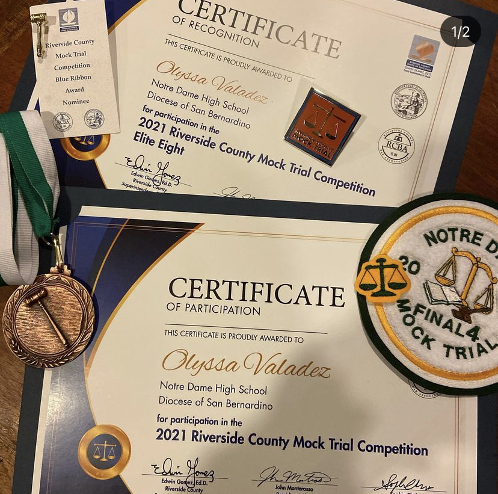
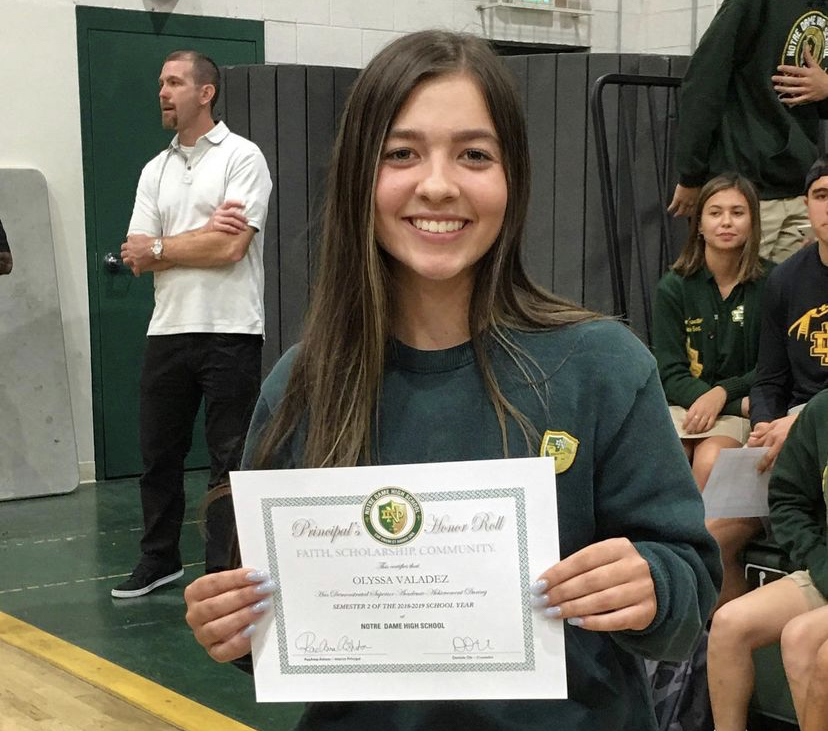
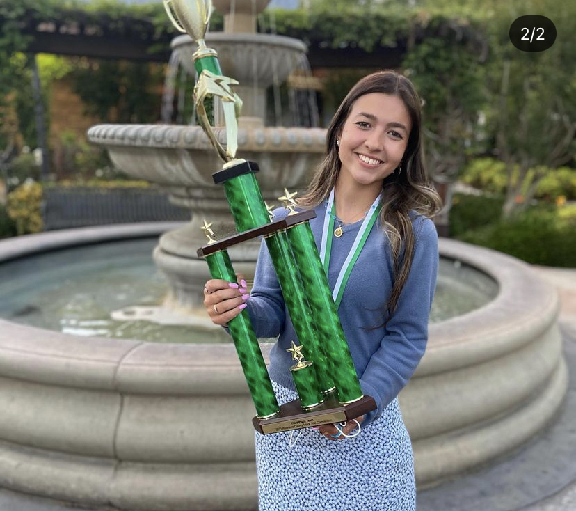
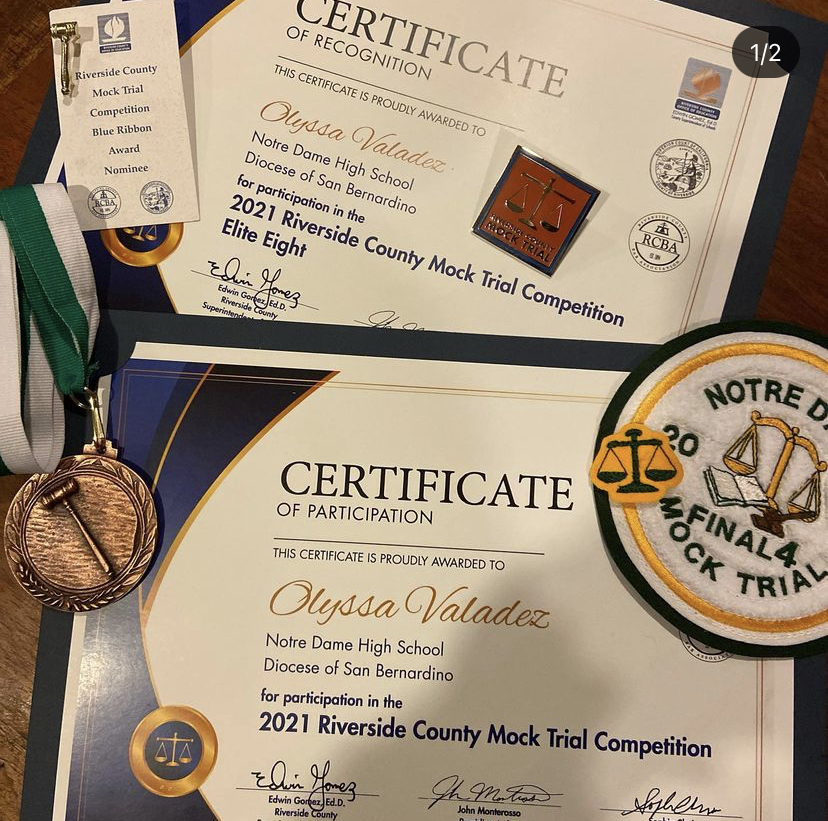
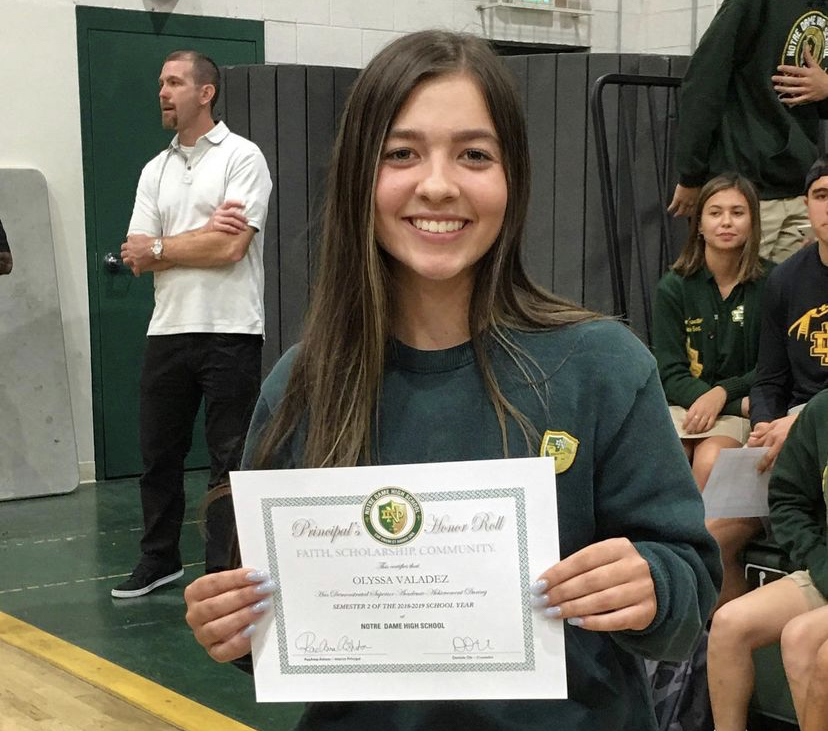
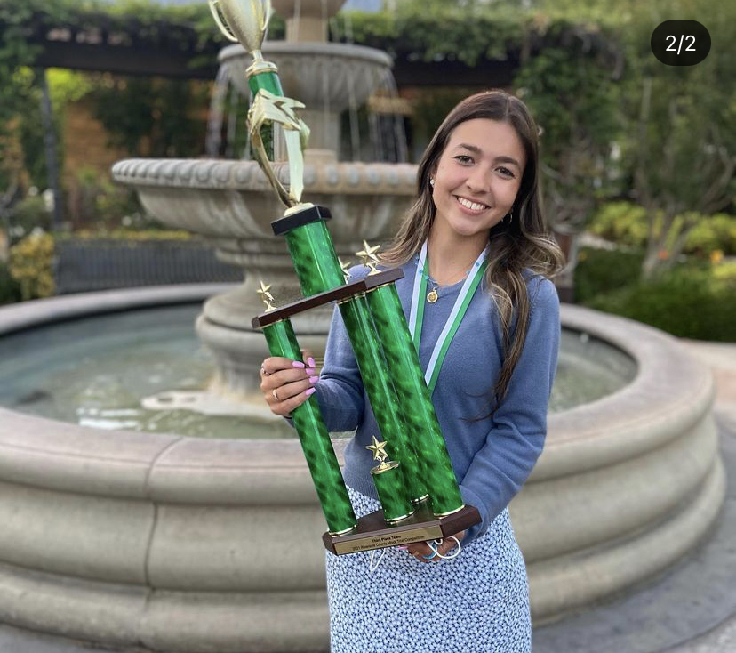
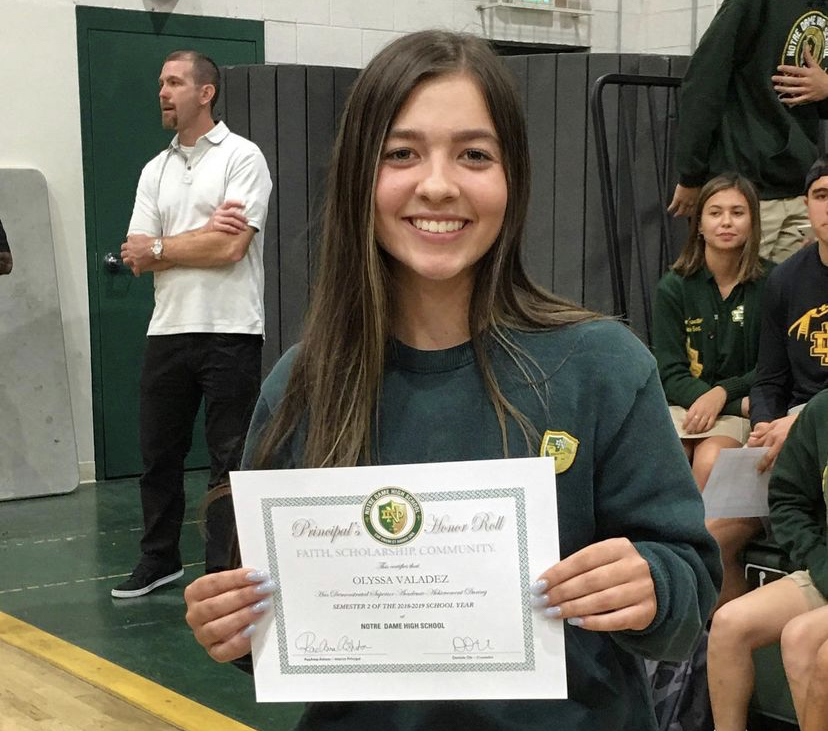
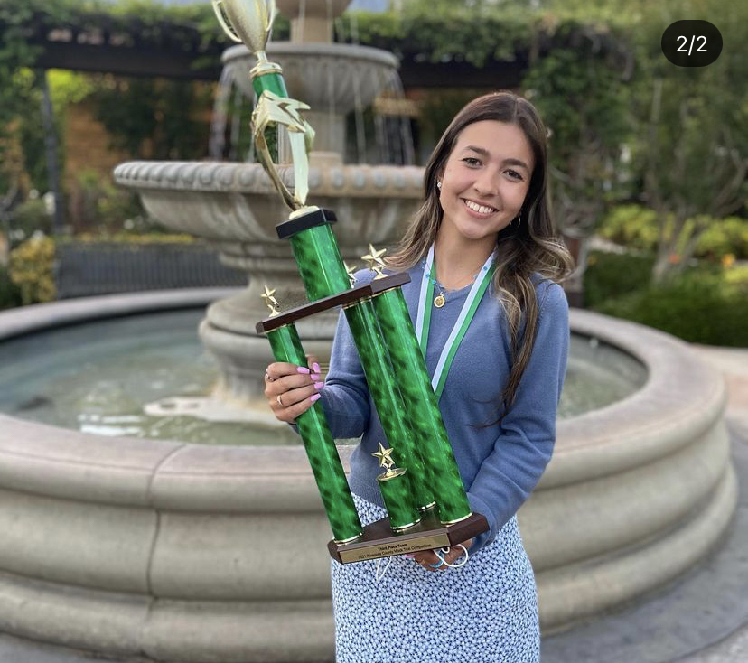

Olyssa Valadez
During my time in high school I became involved and decided to show leadership in attempt to create a better school environment. I view my leadership skills as my greatest skill that I apply in every extracurricular I am involved in. The core leadership skills I have learned include self-awareness, communication, positively influencing others, and learning from experiences to perform more effectively. I used these skills while serving as a tennis captain for two years, junior class Vice President, senior class President, and the Educators Rising Club Vice President for two years.
My sophomore year of high school I was given the opportunity from my school to apply to be a hospital volunteer and I was interested at the time in seeing how a hospital functions first hand. I began volunteering at my local hospital, the Riverside Community Hospital, on the labor and delivery floor. I volunteered for six months up until covid began almost every Saturday morning for four hours. My local hospital had a large patient rate of low income families and a high surrounding homeless population. Although the medical field is not the career path I chose to pursue I found a personal fulfillment by being able to aid my community.
I have worked since 2019 filing banking records for a real estate company.
Experience
Student Government President
• organized school events
• helped raise funds while working with other students
Education
UC Riverside
University of California Riverside
University of California Riverside
Portfolio
Portfolio




Portfolio



 